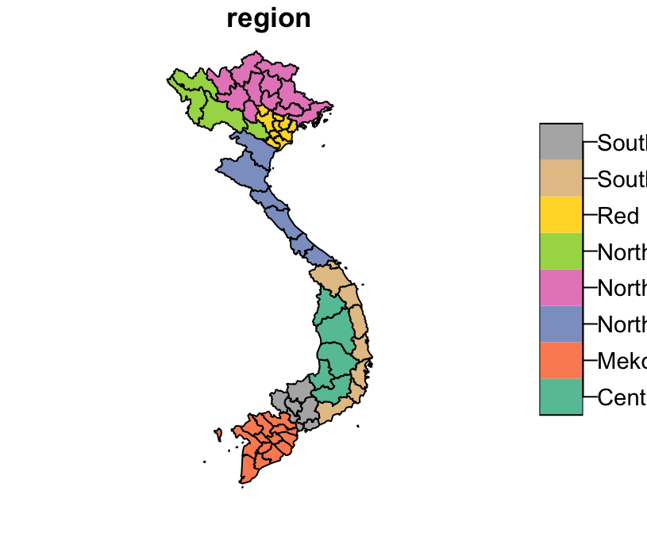

Using gadmVN
Marc Choisy
2019-07-17
This package contains the polygons of Vietnam and its provinces at different points in time since 1979, reflecting the changes in the administrative divisions along the history of Vietnam.
Installation and loading
You can install gadmVN from GitHub with:
> # install.packages("devtools")
> devtools::install_github("choisy/gadmVN", build_vignettes = TRUE)Once installed, you can load the package:
> library(gadmVN)Usage examples
SpatialPolygonsDataFrame can be retrieved thanks to the gadm function. The first argument is the date at which we want the map (either a text in the “YYYY-MM-DD” format or a 4-digit numeric format of the year). The second argument specifies the level we are interested in (either “provinces” or “country”), the third argument is the level of resolution we want (either “low” or “high”) and the last argument tells whether we want the province of Ha Noi and Ha Son Binh to be merged. This latter argument makes a difference only for date before 1992-01-01.
The map of the provinces in 1992
> pr <- gadm(1992)Maping 4 categories of provinces according to latitude:
> library(sf) # for the "st_coordinates" and "st_geometry" functions
Linking to GEOS 3.6.1, GDAL 2.1.3, PROJ 4.9.3
> latitudes <- test <- as.data.frame(st_coordinates(pr)[, c(2,5)],
+ stringsAsFactors = FALSE)
> latitudes <- sapply(split(latitudes, as.factor(latitudes$L3)),
+ function(x) mean(x[, "Y"]))
> breaks <- seq(min(latitudes), max(latitudes), le = 5)
> palette <- c("red", "blue", "green", "orange")
> colors <- palette[as.numeric(cut(latitudes, breaks, include = TRUE))]
> plot(st_geometry(pr), col = colors)
Plotting the 8 regions of Vietnam:
> provinces <- gadm()
> plot(st_geometry(provinces), col = provinces$colors_ecologic)
> leg <- as.data.frame(provinces[, c("region", "colors_ecologic")])
> leg <- unique(leg[, which(names(leg) != "geometry")])
> legend("topleft", legend = leg$region, fill = leg$colors_ecologic, bty = "n")